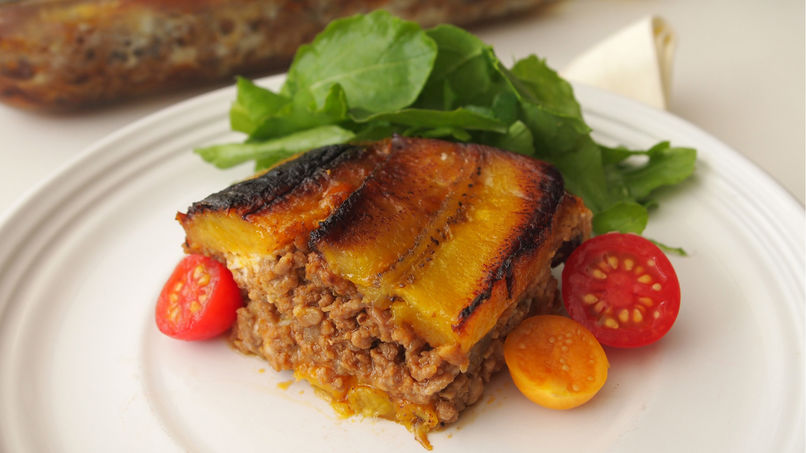

Pastelón

Description
Pastelón, the Puerto Rican layered meat and sweet plantain pie,
is one of those recipes that can divide families.
Ingredients
- 4 ripe plantains, about 3 to 3 1/4 pounds
- 1/2 cup vegetable oil
- 1 pound ground beef (preferably ground round) or ground turkey
- 1 teaspoon adobo seasoning blend
- 1 1/2 teaspoons sazón flavoring blend, store-bought or homemade, optional
- 1 small white onion, minced (about 1 cup)
- 1 green bell pepper, minced (about 1 cup)
- 1 tablespoon recaito flavoring base (store-bought or homemade), or 2 tablespoons chopped cilantro
- 6 pimento-stuffed green olives, sliced
- 1 teaspoon capers
- 1 teaspoon dried oregano
- 1 cup tomato sauce
- 2 cups Monterey jack, cheddar, or mozzarella cheese, divided
- 2 large eggs
- 1/2 teaspoon baking soda